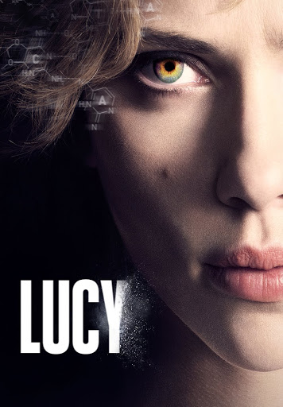

LUCY es una película de ciencia ficción dirigida por Luc Besson. Protagonizada por Scarlett Johansson.
Trata sobre una mujer que es obligada a transportar una droga sintética llamada CPH4, que le otorga poderes cerebrales sobrehumanos.
La película se basa en el famoso mito médico de que solo usamos el 10% del cerebro.

Lucy desbloqueando el 100% de su capacidad cerebral.
Lucy es una estudiante que termina atrapada en un negocio de drogas. Al romperse la bolsa de CPH4 en su cuerpo, su cerebro empieza a evolucionar del 10% al 100%, obteniendo telequinesis, control del tiempo y del cuerpo. La película mezcla acción con teorías filosóficas sobre el origen de la vida.